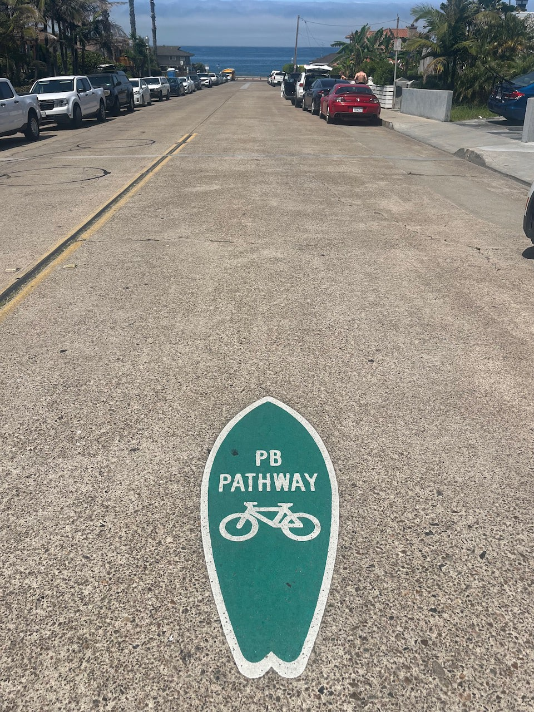

Mission Bay might be my favorite place to visit in California. I’ve spent spring breaks and senior weeks there, and now a bachelor party too. “It's like Cape Cod with palm trees” was thrown out there this weekend. And we enjoyed every bit being on the beach, walking to bars and nightlife, and lining up for breakfast burritos across the street.
Most of the guys booked their flights back to the east coast on Sunday morning, which was smart. My cross-country flight didn't depart until 9pm. So after saying goodbyes and ignoring the hangover, I got on my skateboard. Because of course this coastal neighborhood that swoops and curves around the water has a network of bike paths and bike-friendly streets.
I started in Pacific Beach, where one of its designated PB Pathways (5MB PDF) merged with the Mission Beach boardwalk. Sunday brunch was not the best time to be weaving through the crowds, but at least I wasn’t the only one doing it. Way more people were on roller skates! The stretches past densely-packed rental houses were quieter, the ones past the bars and roller coaster were obviously busier. Then a gentle U-turn at the southern tip of the peninsula led me back north along Mission Bay. And this was so quiet. Hardly any wave activity on the bay. More young families or older couples than big groups of delayed spring breakers. I got the same urge my mother did, the last time we came here as a family, to buy a property.
The farther I got from the ocean, the prettier the views became. The bike trail near Sea World cut through fields of wildflowers, and the parallel trail on the other side of the major road leading into the park ran adjacent to the San Diego River. I took a bridge over the river and followed it back to the Pacific, which happened to be at a dog beach. Between the low tide exposing seaweed and other saltwater flora, and the years of built up dog pee, I was inspired to order a Lyft and head to the airport early.